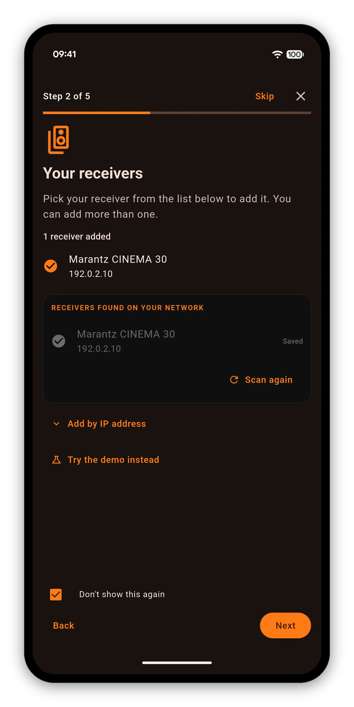

When AVR Maestro cannot find or reach your receiver, the cause is almost always the network, not the app. Work through these checks in order: Network Control, the subnet, the IP address and a busy receiver.


Each one takes a minute. Stop as soon as the receiver connects.
The phone and the receiver must share a network. Mesh systems, guest networks and IoT VLANs can isolate devices, and a receiver on a different subnet will not be found by itself.
On the receiver, turn Network Control on under Setup so it can be reached and woken from standby. The exact menu path varies by model.
Read the address on the receiver's own Network, Information screen and compare it with the one in the app. DHCP addresses change, so reserve it in your router if it keeps moving.
If too many controller apps hold connections, the app says the network is busy instead of failing without a reason. Close the other controller or give it a few seconds.
Two fixes cover most of it.
After a long uptime the receiver's Telnet listener can get stuck. Unplugging the receiver for a moment clears it.
Receivers usually sit on 2.4 GHz while phones prefer 5 GHz. On a Wi-Fi 6 mesh, put the phone on the same band as the receiver.
Full steps are in the getting started guide and on the help and troubleshooting page. To see whether your model is listed, open the supported receivers page.
One-time purchase. No ads, no subscriptions. Connect to your Denon or Marantz in under a minute.